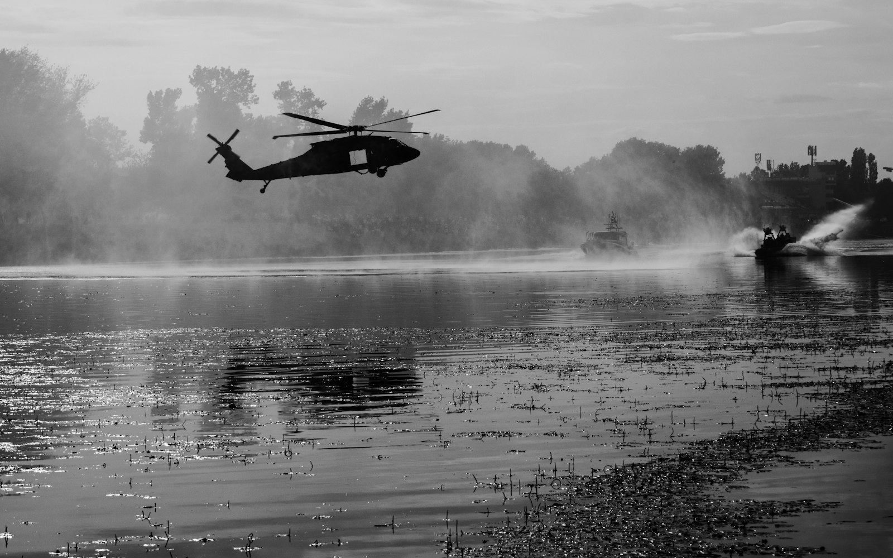

Delta Force vs. SEAL Team 6
遊戲名字的由來：美國陸軍三角洲部隊和海軍海豹六隊（DEVGRU），兩支最頂尖的特種部隊有什麼不同？

這兩支部隊的任務大多是機密，官方很少公開細節。這裡整理的是公開報導和歷史資料，人數、選訓細節等說法各來源不一。遊戲裡的劇情和角色都是虛構的。
先認識兩支部隊
U.S. ARMY 陸軍
三角洲部隊 Delta Force
正式名稱「第一特種部隊作戰分遣隊－D」（1st SFOD-D）。遊戲《三角洲行動》的名字就是來自這支部隊。
VS
U.S. NAVY 海軍
海豹六隊 SEAL Team 6
正式名稱「海軍特種作戰發展大隊」（DEVGRU）。「SEAL Team 6」是大家習慣的舊稱。
CS 老玩家一定見過：CS:GO 時代的 CT 陣營裡就有 SEAL Team 6 的角色模型。現在換成玩以 Delta 命名的遊戲，剛好認識一下這對「美軍雙雄」。
一張表看懂差異
| 項目 | Delta Force | SEAL Team 6 / DEVGRU |
|---|---|---|
| 軍種 | 陸軍 | 海軍 |
| 成立 | 1977 年 | 1980 年（1987 年改名 DEVGRU） |
| 創立者 | 查理・貝克威斯上校（Charles Beckwith） | 理查・馬辛柯（Richard Marcinko） |
| 學習對象 | 英國特種空勤團（SAS） | 為了補足海上反恐能力而成立 |
| 基地 | 北卡羅來納州布拉格堡（Fort Bragg） | 維吉尼亞州維吉尼亞海灘的 Dam Neck |
| 上級指揮 | 兩者都隸屬「聯合特種作戰司令部」（JSOC），常被稱為美軍的「Tier 1」特種任務部隊 | |
| 人員來源 | 主要來自陸軍，例如遊騎兵、綠扁帽；其他軍種也可報名 | 只從現役海豹部隊隊員中挑選 |
| 選訓 | 山區長距離負重越野等嚴苛選拔，通過後再接受作戰訓練課程 | 評估選拔後進入名為「Green Team」的訓練課程 |
| 專長 | 陸地反恐、人質救援、城鎮突擊 | 海上反恐（船艦、港口、鑽油平台），也大量執行陸地任務 |
| 曝光度 | 一向非常低調 | 2011 年擊斃賓拉登後曝光大增，相關書籍和電影很多 |
兩支部隊的關係
- 同一個源頭：1980 年 Delta 參與的伊朗人質救援行動「鷹爪行動」失敗，美軍檢討後決定加強特種作戰能力，海豹六隊就是在這之後成立的。
- 既是隊友也是對手：兩隊常被拿來比較，彼此有競爭心，但實際上同屬 JSOC，很多任務會一起執行或互相支援。
- 分工看任務：一般來說海上和沿海任務偏向 DEVGRU，內陸任務偏向 Delta，但實務上兩者的任務範圍高度重疊。
知名行動時間軸
- 1980Delta鷹爪行動：伊朗人質救援失敗，促成海豹六隊和美軍特種航空部隊的成立。
- 1993Delta摩加迪休之戰：與遊騎兵在索馬利亞執行任務，兩架黑鷹直升機被擊落，也就是電影《黑鷹計劃》的故事。
- 2003Delta逮捕海珊：參與在伊拉克逮捕前總統海珊的行動。
- 2009DEVGRU阿拉巴馬號營救：狙擊手在海上擊斃索馬利亞海盜、救出被挾持的船長，改編成電影《怒海劫》。
- 2011DEVGRU海神之矛行動：在巴基斯坦擊斃賓拉登。
- 2011DEVGRUExtortion 17：運輸直升機在阿富汗被擊落，是 DEVGRU 史上傷亡最慘重的一次。
- 2019Delta突襲巴格達迪：在敘利亞突襲伊斯蘭國首領巴格達迪的藏身處。
- 2026Delta逮捕馬杜洛：據 CBS 等媒體報導，Delta 於 1 月 3 日在委內瑞拉逮捕總統馬杜洛；部分細節仍來自匿名消息。
跟遊戲的關係
- 遊戲名字：《三角洲行動》（Delta Force）以三角洲部隊命名，同名遊戲系列從 1998 年就有了。
- 黑鷹墜落戰役：遊戲裡的「黑鷹墜落」合作戰役，重現 1993 年摩加迪休之戰。它致敬 2001 年電影和 2003 年的經典遊戲《Delta Force: Black Hawk Down》，2025 年 2 月推出，共七章、四人合作。
- 現實 vs. 遊戲：真實的特種部隊沒有幹員技能、也不會「搜打撤」。遊戲取材自真實部隊的形象，但玩法、角色和劇情都是虛構的。
給孩子的小知識
- 「Delta」是希臘字母 Δ，網站的 favicon 三角形就是從這裡來的。
- 真實的特種部隊隊員要經過好幾年的訓練和非常嚴格的選拔，體能、判斷力、團隊合作缺一不可。
- 遊戲裡死了可以重來，現實裡不行。這些行動背後都有真實的人和代價，可以跟孩子聊聊這一點。
結論
Delta 是陸軍、DEVGRU 是海軍，兩者同屬美軍最頂尖的 Tier 1 部隊。Delta 以陸地反恐和低調聞名，也是遊戲名字的由來；DEVGRU 擅長海上任務，因擊斃賓拉登而廣為人知。兩隊既競爭也合作，是美軍特種作戰的兩根支柱。
參考來源
- SEAL Team Six and Delta Force: 6 Key Differences（History.com）
- Differences between Delta and SEAL Team 6（SOFREP）
- 5 key differences between Delta Force and SEAL Team 6（We Are The Mighty）
- Differences between SEAL Team 6 and Delta Force（GI Jobs）
- New details on Maduro capture revealed（CBS News）
- What is Delta Force, the US military unit behind Venezuela operation（Newsweek）
- Delta Force Unleashes Black Hawk Down Campaign（Intel Gaming）
- Delta Force Black Hawk Down campaign launches February 21st（Gaming Nexus）